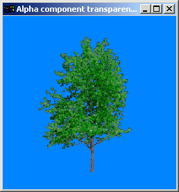
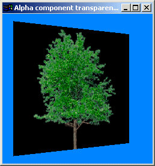

urce source source source source source source source source source source |
[program
eight]
This example shows how to use an alpha component in images. The
tree image is texture mapped onto a quad. If the image has an alpha
channel and opengl is set into the proper state we can make unwanted portions of
the image transparent.
Have a look at the tree image in an art package to see how the alpha channel
works. Usually you can view the separate channels individually - the red,
green and blue channels you will be familiar with. You'll notice an extra
channel, this is the alpha channel -- areas we want to see are coloured white in
this channel.
Press [1] and [2] to toggle the transparency on and off.
Alpha channels can also be used to control the level of blending - I might cover
this is more detail later (I'm planning to add a HUD to my solar system program)
 
There isn't anything new at the start of our initialisation function. Read the previous examples to recap on the vertex array specifics.
[1] void
init ( void )
[2] {
[3]
tgaGetColorEXT ( );
[4]
[5] glEnable ( GL_TEXTURE_2D );
[6] glPixelStorei ( GL_UNPACK_ALIGNMENT, 1 );
[7] glGenTextures ( MAX_TEXTURES, tex_id
);
[8]
[9] glBindTexture ( GL_TEXTURE_2D, tex_id[TREE_IMAGE] );
[10] tgaLoadImage ( "tree.tga", &tree, TGA_FREE
);
[11]
[12] glEnable ( GL_DEPTH_TEST );
[13] glEnableClientState ( GL_VERTEX_ARRAY
);
[14] glEnableClientState ( GL_TEXTURE_COORD_ARRAY );
[15] glClearColor ( 0.0, 0.5, 1.0, 1.0 );
[16]
[17] glVertexPointer ( 3, GL_FLOAT, 0, &vertices
);
[18] glTexCoordPointer ( 2, GL_FLOAT, 0, &tex_coords );
Line 20 sets the alpha function, the 'cutoff' threshold can be adjusted to your requirements, read the manual pages for a full description of the arguments. Line 21 enables the alpha test.
[20] glAlphaFunc ( GL_GREATER, 0.3 );
[21] glEnable ( GL_ALPHA_TEST );
[22] }
That's
it! All the other functions remain the same. You'll notice that
there are some differences with keyboard interaction. We enable and
disable alpha testing here.
Website and content, Paul Groves